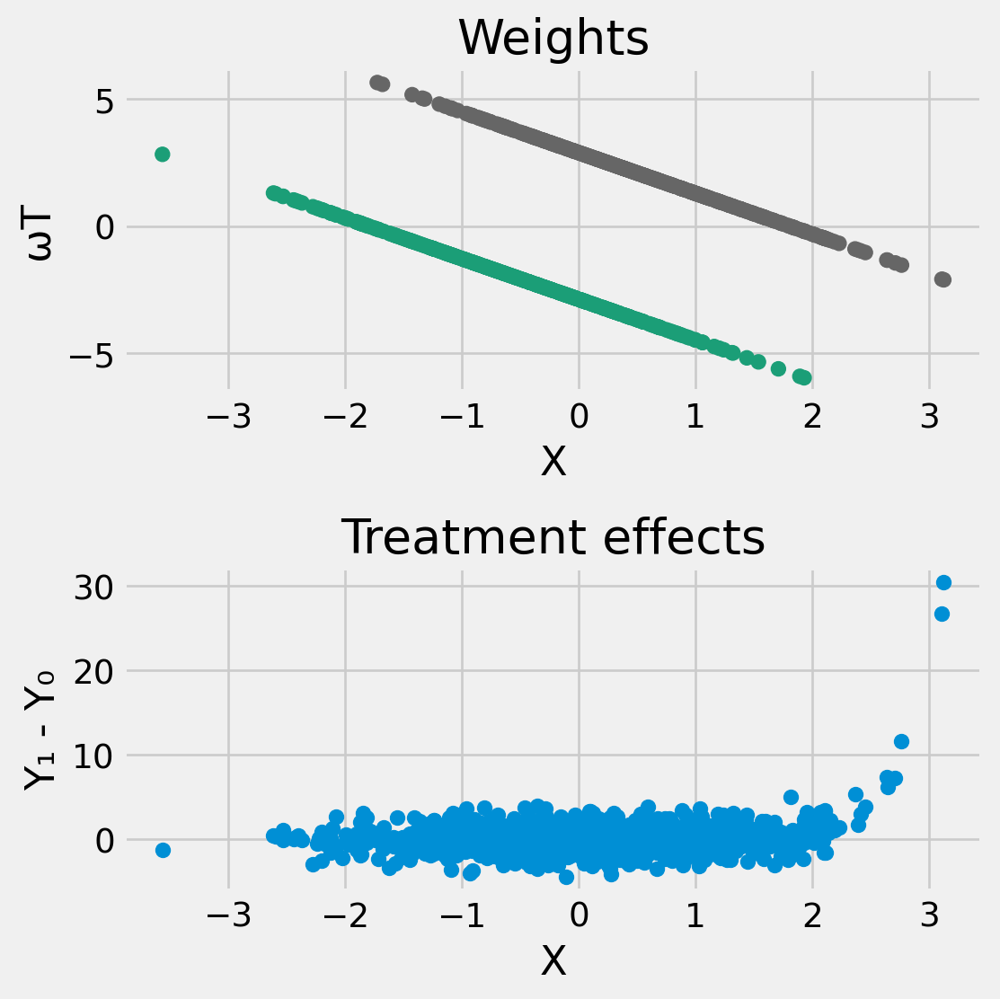
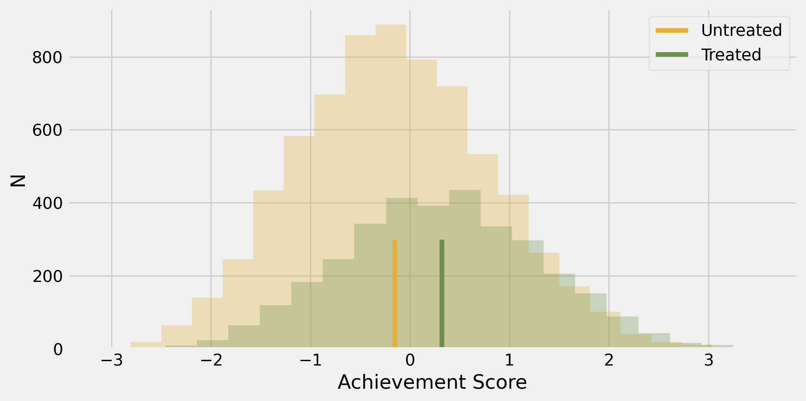
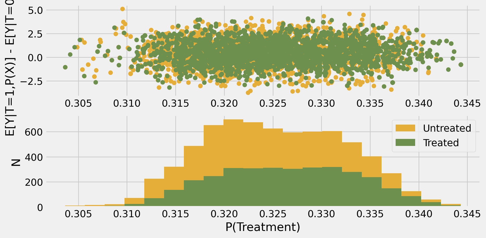

Matching
ECON526
University of British Columbia
Introduction
Setting
- Potential outcomes \((Y_0, Y_1)\)
- Treatment \(T\)
- Observe \(Y = Y_0(1-T) + T Y_1\)
- Covariates \(X\)
- Assume conditional independence \((Y_0,Y_1) \perp T | X\)
\[ \def\Er{{\mathrm{E}}} \def\En{{\mathbb{En}}} \def\cov{{\mathrm{Cov}}} \def\var{{\mathrm{Var}}} \def\R{{\mathbb{R}}} \newcommand\norm[1]{\left\lVert#1\right\rVert} \def\rank{{\mathrm{rank}}} \newcommand{\inpr}{ \overset{p^*_{\scriptscriptstyle n}}{\longrightarrow}} \def\inprob{{\,{\buildrel p \over \rightarrow}\,}} \def\indist{\,{\buildrel d \over \rightarrow}\,} \DeclareMathOperator*{\plim}{plim} \DeclareMathOperator*{\argmin}{argmin} \]
Why not regression?
- Average treatment effect \[ ATE = \int \Er[Y|T=1,X=x] - \Er[Y|T=0,X=x] dP(x) \]
- Regression gives the best linear approximation to \(\Er[Y|T,X]\), so why not just estimate linear regression \[ Y_i = \hat{\alpha} T_i + X_i'\hat{\beta} + \hat{\epsilon}_i \] and, and then use \(\hat{\alpha}\) as an estimate of the ATE?
Why not regression?
Partial out (Frish-Waugh-Lovell theorem) \[ \begin{align*} \hat{\alpha} = & \frac{\frac{1}{n} \sum_{i=1}^n Y_i (T_i - X_i'(X'X)^{-1}X'T)} {\frac{1}{n} \sum_{i=1}^n (T_i - X_i'(X'X)^{-1}X'T)^2} \\ \inprob & \Er\left[Y_i \underbrace{\frac{T_i - X_i'\pi}{\Er[(T_i - X_i'\pi)^2]}}_{\equiv \omega(T_i,X_i)}\right] \\ = & \Er\left[Y_{0,i} \omega(T_i,X_i)\right] + \Er\left[(Y_{1,i}-Y_{0,i}) \omega(T_i,X_i)T_i\right] \end{align*} \] where \(\pi = \argmin_{\tilde{\pi}} \Er[(T_i - X_i'\tilde{\pi})^2]\)
Note: \(\Er[\omega(T,X)] = 0\), \(\Er[T\omega(T,X)] = 1\)
Why not regression?
\(\plim \hat{\alpha} = \Er\left[Y_{0,i} \omega(T_i,X_i)\right] + \Er\left[(Y_{1,i}-Y_{0,i}) \omega(T_i,X_i)T_i\right]\)
What can be in the range of \(\omega(T,X) = \frac{T - X'\pi}{\Er[(T_i - X_i'\pi)^2]}\)?
Why not regression?
np.random.seed(1234)
def simulate(n, pi=np.array([0,1])):
X = np.random.randn(n, len(pi))
X[:,0] = 1
T = 1*((X @ pi + np.random.randn(n))>0)
y0 = np.random.randn(n)
y1 = np.exp(3*(X[:,1]-2)) + np.random.randn(n)
y = T*y1 + (1-T)*y0
return(X,T,y,y0,y1)
X,T,y,y0,y1 = simulate(1000)
pihat = np.linalg.solve(X.T @ X, X.T @ T)
w = T - X @ pihat
w = w/np.mean(w**2);Why not regression?
TX = np.hstack((T.reshape(len(T),1),X))
abhat = np.linalg.solve(TX.T @ TX, TX.T @ y)
ahat = abhat[0]
print(ahat)-0.06414016921951447- Weights, \(\omega(T,X)\), are not all positive, so the regression estimate can be negative even if \(\Er[Y_1 | X] - \Er[Y_0|X]\) is positive everywhere
Why not regression?
plot
import matplotlib.cm as cm
fig, axes = plt.subplots(2, 1, figsize=(6, 6))
# Create a scatter plot for the first panel (left)
axes[0].scatter(X[:,1], w, c=T, cmap=cm.Dark2)
axes[0].set_xlabel("X")
axes[0].set_ylabel("ωT")
axes[0].set_title("Weights")
axes[1].scatter(X[:,1], y1-y0, label="TE")
axes[1].set_xlabel("X")
axes[1].set_ylabel("Y₁ - Y₀")
axes[1].set_title("Treatment effects")
# Display the plot
plt.tight_layout() # Ensure proper layout spacing
plt.show()
Matching
Matching
- If not regression, then what? \[ ATE = \int \Er[Y|T=1,X=x] - \Er[Y|T=0,X=x] dP(x) \]
Plug-in estimator
- Plug in estimator: \[
\widehat{ATE} = \frac{1}{n} \sum_{i=1}^n \left(\hat{E}[Y|T=1,X=X_i] - \hat{E}[Y|T=0,X=X_i] \right)
\] where \(\hat{E}[Y|T,X]\) is some flexible estimator for \(\Er[Y|T,X]\)
- if \(X\) is discrete, \(\hat{E}\) can be conditional averages or equivalently, “saturated” regression
- if \(X\) continuous, \(\hat{E}\) can be some nonparametric regression estimator
- Original approaches to this problem used nearest neighbor matching to estimate \(\hat{E}[Y|T,X]\)
- Downside:
- Difficult statistical properties — choice of tuning parameters, strong assumptions needed, failure of bootstrap for nearest neighbors Abadie and Imbens (2008)
Propensity Score
- Let \(e(X) = P(T=1|X=X)\)
- Note: \[ \begin{align*} \Er[Y|X,T=1] - \Er[Y|X,T=0] = & E\left[\frac{Y T}{e(X)}|X \right] - E\left[\frac{Y(1-T)}{1-e(X)}|X \right] \\ = & E\left[ Y \frac{T - e(X)}{e(X)(1-e(X))} | X \right] \end{align*} \]
Propensity Score
- so \[ ATE = \Er\left[ \frac{Y T}{e(X)} - \frac{Y(1-T)}{1-e(X)}\right] = \Er\left[ Y \frac{T - e(X)}{e(X)(1-e(X))} \right] \]
Inverse propensity weighting
Estimator \[ \widehat{ATE}^{IPW} = \frac{1}{n} \sum_{i=1}^n \frac{Y_iT_i}{\hat{e}(X_i)} - \frac{Y_i(1-T_i)}{1-\hat{e}(X_i)} \] where \(\hat{e}(X)\) is some flexible estimator for \(P(T=1|X)\)
Downside:
- Difficult statistical properties — choice of tuning parameters, strong assumptions needed
Doubly Robust Estimator
- Estimator \[ \begin{align*} \widehat{ATE}^{DR} = & \frac{1}{n} \sum_{i=1}^n \hat{E}[Y|T=1,X=X_i] - \hat{E}[Y|T=0,X=X_i] + \\ & + \frac{1}{n} \sum_{i=1}^n \frac{T_i(Y_i - \hat{E}[Y|T=1,X=X_i])}{\hat{e}(X_i)} - \\ & - \frac{(1-T_i)(Y_i - \hat{E}[Y|T=0,X=X_i])} {1-\hat{e}(X_i)} \end{align*} \]
Doubly Robust Estimator
- Doubly robust in that:
- Consistent as long as either \(\hat{e}(X) \inprob e(X)\) or \(\hat{E}[Y|T,X] \inprob \Er[Y|T,X]\)
- Insensitive to small changes in \(\hat{e}(X)\) or \(\hat{E}[Y|T,X]\)
- Allows: nicer statistical properties
- Weaker assumptions needed
- Asymptotic distribution is the same as if \(e(X)\) and \(\Er[Y|T,X]\) were known
Software
- Advice: use the doubly robust estimator with nonparametric estimates for \(\hat{E}[Y|T,X]\) and \(\hat{e}(X)\)
- Recommended package:
- econml has the correct estimator and examples of using it with nonparametric estimates
- focuses on conditional instead of unconditional average treatment effects, but can be used for both
- econml has the correct estimator and examples of using it with nonparametric estimates
Software
- Other packages:
- causalinference has a double robust estimator, but it estimates \(\hat{E}[Y|T,X]\) via linear regression and \(\hat{e}(X)\) via logit (maybe probit, not sure)
- can make nonparametric by adding e.g. powers of \(x\) to \(X\), but need to manage manually
- zEpid is similiar to causalinference, but has a formula interface, so slightly easier to make model more flexible
- causalinference has a double robust estimator, but it estimates \(\hat{E}[Y|T,X]\) via linear regression and \(\hat{e}(X)\) via logit (maybe probit, not sure)
Example: simulation
- Infeasible estimator: average of \(Y_1 - Y_0\)
Example: simulation
from econml.dr import DRLearner, LinearDRLearner, SparseLinearDRLearner
from econml.sklearn_extensions.linear_model import StatsModelsLinearRegression
from sklearn.ensemble import GradientBoostingRegressor, GradientBoostingClassifier
from sklearn.linear_model import LassoCV, LogisticRegressionCV, ElasticNetCV
from sklearn.preprocessing import PolynomialFeatures#
est = LinearDRLearner(featurizer=PolynomialFeatures(degree=20, include_bias=False),
model_regression=LassoCV(),
model_propensity=LogisticRegressionCV(),
#model_final=StatsModelsLinearRegression(),
cv=10)
est.fit(y, T, X=None, W=X)<econml.dr._drlearner.LinearDRLearner at 0x73cb0bf49ac0>Growth Mindset
National Study of Learning Mindsets
Data
| schoolid | intervention | achievement_score | success_expect | ethnicity | gender | frst_in_family | school_urbanicity | school_mindset | school_achievement | school_ethnic_minority | school_poverty | school_size | |
|---|---|---|---|---|---|---|---|---|---|---|---|---|---|
| 9366 | 9 | 0 | 1.137192 | 6 | 1 | 1 | 1 | 4 | 1.324323 | -1.311438 | 1.930281 | 0.281143 | 0.362031 |
| 7810 | 27 | 0 | -0.554268 | 5 | 2 | 1 | 1 | 1 | 0.240267 | -0.785287 | 0.611807 | 0.612568 | -0.116284 |
| 7532 | 29 | 0 | -0.462576 | 6 | 1 | 1 | 1 | 1 | -0.373087 | 0.113096 | -0.833417 | -1.924778 | -1.147314 |
| 10381 | 1 | 0 | -0.402644 | 5 | 2 | 2 | 1 | 3 | 1.185986 | -1.129889 | 1.009875 | 1.005063 | -1.174702 |
| 1244 | 57 | 1 | 1.528680 | 6 | 4 | 1 | 1 | 2 | 0.097162 | -0.292353 | -1.030865 | -0.813799 | 0.184716 |
Evidence of Confounding
Code
def std_error(x):
return np.std(x, ddof=1) / np.sqrt(len(x))
grouped = data.groupby('success_expect')['intervention'].agg(['mean', std_error])
grouped = grouped.reset_index()
fig, ax = plt.subplots()
plt.errorbar(grouped['success_expect'],grouped['mean'],yerr=1.96*grouped['std_error'],fmt="o")
ax.set_xlabel('student expectation of success')
ax.set_ylabel('P(treatment)')
plt.show()
Unadjusted estimate of ATE
================================================================================
coef std err t P>|t| [0.025 0.975]
--------------------------------------------------------------------------------
Intercept -0.1538 0.012 -13.201 0.000 -0.177 -0.131
intervention 0.4723 0.020 23.133 0.000 0.432 0.512
================================================================================print(smf.ols("achievement_score ~ intervention", data=data).fit(
cov_type="cluster", cov_kwds={'groups': data['schoolid']}).summary().tables[1])================================================================================
coef std err z P>|z| [0.025 0.975]
--------------------------------------------------------------------------------
Intercept -0.1538 0.036 -4.275 0.000 -0.224 -0.083
intervention 0.4723 0.025 19.184 0.000 0.424 0.521
================================================================================Unadjusted estimate of ATE
Code
fig,ax=plt.subplots()
plt.hist(data.query("intervention==0")["achievement_score"], bins=20, alpha=0.3, color="C2")
plt.hist(data.query("intervention==1")["achievement_score"], bins=20, alpha=0.3, color="C3")
plt.vlines(-0.1538, 0, 300, label="Untreated", color="C2")
plt.vlines(-0.1538+0.4723, 0, 300, label="Treated", color="C3")
ax.set_xlabel("Achievement Score")
ax.set_ylabel("N")
plt.legend()
plt.show();
Regression estimate of ATE
ols = smf.ols("achievement_score ~ intervention + success_expect + ethnicity + gender + frst_in_family + school_urbanicity + school_mindset + school_achievement + school_ethnic_minority + school_poverty + school_size",data=data).fit()
print(ols.summary().tables[1])==========================================================================================
coef std err t P>|t| [0.025 0.975]
------------------------------------------------------------------------------------------
Intercept -1.7786 0.056 -31.880 0.000 -1.888 -1.669
intervention 0.3964 0.018 22.192 0.000 0.361 0.431
success_expect 0.3746 0.008 49.514 0.000 0.360 0.389
ethnicity 0.0043 0.002 2.049 0.040 0.000 0.008
gender -0.2684 0.017 -16.060 0.000 -0.301 -0.236
frst_in_family -0.1310 0.018 -7.248 0.000 -0.166 -0.096
school_urbanicity 0.0573 0.007 8.240 0.000 0.044 0.071
school_mindset -0.1484 0.011 -13.083 0.000 -0.171 -0.126
school_achievement -0.0253 0.013 -1.902 0.057 -0.051 0.001
school_ethnic_minority 0.1197 0.011 11.178 0.000 0.099 0.141
school_poverty -0.0154 0.011 -1.466 0.143 -0.036 0.005
school_size -0.0467 0.011 -4.326 0.000 -0.068 -0.026
==========================================================================================Regression estimate of ATE: weights
lpm = smf.ols("intervention ~ success_expect + ethnicity + gender + frst_in_family + school_urbanicity + school_mindset + school_achievement + school_ethnic_minority + school_poverty + school_size",data=data).fit(cov_type="cluster", cov_kwds={'groups': data['schoolid']})
w = lpm.resid / np.var(lpm.resid)
print(np.mean(data.achievement_score*w))0.39640236033389553Regression estimate of ATE: weights
Propensity Score Matching
categ = ["ethnicity", "gender", "school_urbanicity","success_expect"]
cont = ["school_mindset", "school_achievement", "school_ethnic_minority", "school_poverty", "school_size"]
data_with_categ = pd.concat([
data.drop(columns=categ), # dataset without the categorical features
pd.get_dummies(data[categ], columns=categ, drop_first=False)# categorical features converted to dummies
], axis=1)
print(data_with_categ.shape)
T = 'intervention'
Y = 'achievement_score'
X = data_with_categ.columns.drop(['schoolid', T, Y])(10391, 38)Propensity Score Matching
from sklearn.linear_model import LogisticRegression, LogisticRegressionCV
from sklearn.neighbors import KNeighborsRegressor
import sklearn
def propensitymatching(T,Y,X,psmodel=LogisticRegressionCV(),neighbormodel=KNeighborsRegressor(n_neighbors=1,algorithm='auto',weights='uniform')):
pfit = psmodel.fit(X,T)
ps = pfit.predict_proba(X)[:,1]
ey1 = neighbormodel.fit(ps[T==1].reshape(-1,1),Y[T==1])
ey0 = sklearn.base.clone(neighbormodel).fit(ps[T==0].reshape(-1,1),Y[T==0])
tex = ey1.predict(ps.reshape(-1,1)) - ey0.predict(ps.reshape(-1,1))
ate = np.mean(tex)
return(ate, tex,ps)
ate,tex,ps=propensitymatching(data_with_categ[T],data_with_categ[Y],data_with_categ[X])
print(ate)0.456936911462113Propensity Score Matching
Code
fig, ax = plt.subplots(2,1)
treat = data.intervention
ax[0].scatter(ps[treat==0],tex[treat==0],color="C2")
ax[0].scatter(ps[treat==1],tex[treat==1],color="C3")
ax[1].hist(ps[treat==0],bins=20,color="C2",label="Untreated")
ax[1].hist(ps[treat==1],bins=20,color="C3",label="Treated")
ax[1].set_xlabel("P(Treatment)")
ax[1].set_ylabel("N")
ax[0].set_ylabel("E[Y|T=1,P(X)] - E[Y|T=0,P(X)]")
plt.legend()
plt.show()
Inverse Propensity Weighting
Doubly Robust
from sklearn.ensemble import GradientBoostingRegressor, GradientBoostingClassifier
from sklearn.linear_model import LassoCV, LogisticRegressionCV, ElasticNetCV
from sklearn.preprocessing import PolynomialFeatures
def robustate(T,Y,X,psmodel=LogisticRegressionCV(),ymodel=LassoCV(), cluster=None):
pfit = psmodel.fit(X,T)
ps = pfit.predict_proba(X)[:,1]
ey1fit = ymodel.fit(X[T==1],Y[T==1])
ey0fit = sklearn.base.clone(ymodel).fit(X[T==0],Y[T==0])
ey1 = ey1fit.predict(X)
ey0 = ey0fit.predict(X)
ate_terms = ey1 - ey0 + T*(Y- ey1)/ps - (1-T)*(Y-ey0)/(1-ps)
ate = np.mean(ate_terms)
# check if cluster is None
if cluster is None :
ate_se = np.sqrt(np.var(ate_terms)/len(ate_terms))
else :
creg=smf.ols("y ~ 1", pd.DataFrame({"y" : ate_terms})).fit(cov_type="cluster", cov_kwds={'groups': cluster})
ate_se = np.sqrt(creg.cov_params().iloc[0,0])
return(ate, ate_se, ps, ey1,ey0)
ate,se,ps,ey1,ey0 = robustate(data_with_categ[T],data_with_categ[Y],data_with_categ[X],cluster=data_with_categ['schoolid'])
print(ate-1.96*se, ate, ate+1.96*se)0.3321412901659991 0.3836159751515205 0.435090660137041951
Doubly Robust
- better to use the
econmlpackage
from econml.dr import DRLearner, LinearDRLearner, SparseLinearDRLearner
est = LinearDRLearner(#featurizer=PolynomialFeatures(degree=2, include_bias=False),
model_regression=LassoCV(),
model_propensity=LogisticRegressionCV(),
cv=5)
est.fit(data_with_categ[Y], data_with_categ[T], X=None, W=data_with_categ[X])
point = est.const_marginal_effect(None)
lb, ub = est.const_marginal_effect_interval(None, alpha=0.05)
print(lb,point,ub)[[0.34806843]] [[0.38205572]] [[0.41604301]]Sources and Further Reading
Useful additional reading is chapters 10-12 of Facure (2022) and chapter 14 of Huntington-Klein (2021).1
The representation of the estimate from a linear model as a weighted average is based on Borusyak and Jaravel (2018)
The growth mindset example is take from Facure (2022)